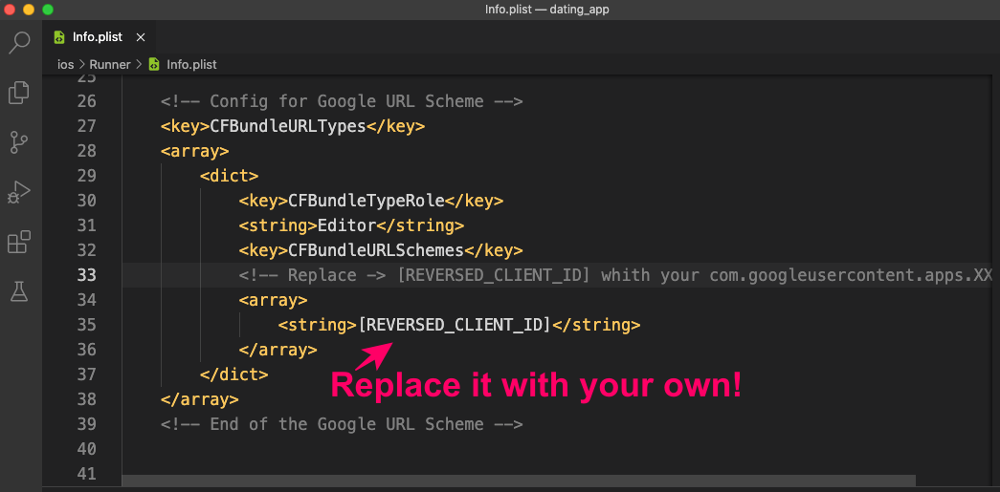

“Flutter Complete Dating App for Android & iOS with Admin Panel” Documentation by “Americo Bila” v1.0.9
“Flutter Complete Dating App for Android & iOS with Admin Panel”
Updated: February 12, 2023
By: Americo Bila
Thank you for purchasing our "Flutter Complete Dating App for Android & iOS with Admin Panel".
About Support
If you have any questions, or facing any issue that are related to our Dating App & Admin Panel source codes, please feel free to contact us using this email address: info.dating.app@gmail.com
Support Response Time:
Our response time for support is 2-Business Days which means when you send us a request for support you need to wait at least 48-hours to get our response!
So don't expect quick replies!
But always we do our best to support our customers as soon as possible!
Our Time Zone & Working time
- Time Zone: UTC +2 = Coordinated Universal Time - Check our current time now here
- Working time: 9:00 AM to 5:00 PM - Monday to Friday
Thank you very much and Get-started with your Dating App Project!
February 12, 2023
Dating App - Changelog
New features:
- Project upgraded to support the latest Flutter SDK v3.7x
- All packages dependencies upgraded to support the latest Flutter v3.7x
- Minor changes & some improvements
Web Admin Panel - Changelog
New features:
- Project upgraded to support the latest Flutter SDK v3.7x
- All packages dependencies upgraded to support the latest Flutter v3.7x
- Minor changes & some improvements
Table of Contents
- Project Overview
- Project requirements
- Get Started with Flutter
- Open Dating App Project
- Project Structure
- Change app information
- Change app package name
- Change app logo
NEW - Update splash screen logo - Add New Language Translation
-
Create Firebase Project
NEW - Firebase initialization for Dating App - Enable Phone Number Authentication
- Change Cloud Firestore Database Rules
- Setup Admob App ID
- Run and Debug App
- Build and Release App
- Create In-App Purchases - (VIP Subscriptions)
- Setup the Passport feature
LAST STEP: ADMIN PANEL SECTION
Setup & Upload Admin Panel
01) Project Overview - top
Flutter Complete Dating App for Android & iOS with Admin Panel is a full functional application that is ready to go production, however you need to follow some Steps to build your app release and publish it on your Google Play Store or Apple Store account.
App Features
- VIP Subscriptions - (In-App purchases)
- Admob Interstials Ads
- Multi-language support
- Push notifications - (New like, visit and message)
- Swipe Left/Right - (like tinder profile cards)
- It's a Match dialog
- Chat with text and image
- Sign in with phone number
- Report User Profile feature
- Profile statistics (Total likes, visits, dislikes)
- Share the app with friends
- Rate app on app stores
- Get location by GPS
- Show Users based on geolocation distance radius in (km)
- Update location
- Change max distance radius in (km)
- Change age range filter
- Alert user to enable GPS
- Redirect user to enable location permission in device settings
- Redirect user to blocked account screen
- Redirect user to update app
- Sign out button
- Delete Account button
- Hide user profile
- Show me Filter: Men, Women or Everyone
- Passport feature
- Backend with Cloud Firestore
- Firebase Free Account Support
App Screens
- Splash Screen
- Sign In Screen
- Login with Phone Number Screen
- Verification Code Screen (OTP)
- Sign Up Screen
- Home Screen
- Profile Screen
- Profile Likes Screen
- Profile Visits Screen
- Disliked Profiles Screen
- Edit Profile Screen
- Notifications Screen
- Chat Screen
- It’s Match Dialog
- About Us Screen
- Blocked Account Screen
- Enable Location Screen
- Settings Screen
- Update App Screen
- Delete Account Screen
- Passport Screen
Tabs
- Discover Tab
- Matches Tab
- Conversations Tab
- Profile Tab
Icons
Beautiful outline SVG icons used in project
02) Project requirements - top
- Flutter SDK v2.10.x - Null Safety Support
- Dart v: 2.16.x - Null Safety Support
- Android target SDK version: 31
- Recommended Editors: Visual Studio Code/ Android Studio/ or Xcode for iOS
03) Get Started with Flutter - top
What is flutter?
Flutter is an open-source cross-platform mobile application SDK developed by Google.
It is used to develop applications for Android, iOS, Linux, Mac, Windows, Google Fuchsia, and the web from a single codebase.
Flutter is written in Dart language.
Why Flutter?
Flutter saves companies the need to employ different iOS and Android developers to build the same app since it supports cross-platforms development.
Development Platforms
After having a basic idea of what flutter is, now it's time to setup your dating_app project.
Flutter requires Flutter SDK to be installed first.
Please check this link https://flutter.dev/docs/get-started/install for official documentation on steps how to install Flutter SDK on your Operating System and set up your favourable editor.
04) Open Dating App Project - top
How to open project using the Visual Studio Code; - (For other IDEs please follow their official instructions)
- Start the Visual Studio Code. or your favorite IDE Editor
- Select File > Open Folder from the main menu and then choose > Flutter Dating App > SOURCE CODES > dating_app folder.
- Run the this command: flutter pub get on your Terminal Editor to get flutter packages.
05) Project Structure - top
Check the project structure and open the pubspec.yaml file
Note: The version numbers of the packages below are always subject to change, we still use the image for demo purposes!
Cloud Firestore Database Collection Names
06) Change app information - top
Open project -> dating_app/lib/constants/constants.dart
Change application info with your own:
- App Name
- App Theme Colors
- App Version Number and other Settings
07) Change app package name - top
The App Package Name is the Unique ID that represents your aplication on app Stores.
It extends from your reversed domain name + your app name,
e.g: company.com will be com.company.appname and before creating it make sure that is unique.
Open project > dating_app project and Search for this package name: com.company.appname in whole project and replace it with your own.
Tip: If you are using Visual Studio Code: Click on Edit tab and then choose -> "Replace in Files" option to change it.
08) Change app logo - top
3.1) Create your app logo and name it "app_logo" with png extension.
3.2) Open project and go to -> dating_app/assets/images/ and paste it replacing the existing one and also replace dating_app/assets/images/sign_in_screen.dart background image, check the image below.
3.3) Update app launcher icon
Open project -> dating_app > Select Terminal of your IDE and run the below commands:
Run first command:
flutter pub get
Run second command:
flutter pub run flutter_launcher_icons:main
Note: The above commands will update app launcher icon in whole project for both android and ios.
3.4) NEW - Update splash screen logo
Open project -> dating_app > Select Terminal of your IDE and run the below command:
Run this command:
flutter pub run flutter_native_splash:create
Note: If you want to customize the splash screen logo or change the default app_logo splash, please open the pubspec.yaml file located in the {app dir}/dating_app/ directory and scroll to bottom and update the settings below:
flutter_native_splash:
color: "#ffffff"
image: "assets/images/app_logo.png"
android: true
ios: true
Note: The above command will update the splash logo for both android & ios.
09) Add New Language Translation - top
The dating_app project is ready to support Multi-Language, but the current one is English.
If you want to add other language translations, please follow the below instructions:
- Go to {app dir}/dating_app/assets/lang/en.json as seen below:
- Copy the en.json file shown above and rename it to the new language you want to support
e.g: fr.json and start translating words to that language.
Rules to define new languages: All language code identifiers must be 2-letter that represents standard language code in lowercase. e.g: ( es.json not ES.json) - Check the complete list of ISO 639-1 language codes.
- How to translate
- Translate only the words on the right, without underscores as seen on image above.
- Don't touch the words with underscores, they are keys used in the app source code.
- Add new language code identifier to the Array List Constant: SUPPORTED_LOCALES
Go to {app dir}/dating_app/constants/constants.dart and locate SUPPORTED_LOCALES Array List Constant as seen below:

E.g: SUPPORTED_LOCALES = [Locale('en'), Locale('fr'), Locale('es')]; note that we have added ( two locales: Locale('fr') and Locale('es') ).
10) Create Firebase Project - top
Before running the dating_app project, first you must integrate it with your Firebase App Project.
Step 1: Go to firebase website: https://firebase.google.com
Tap the Go to console button and then sign in using your Google account or create a new one there.
Step 2: Create new Firebase Project or use an existing one.
Start by adding your project name and follow the remaining firebase steps, check on image below.
Note: The Project ID also will be your application domain e.g: https://dating-app-xxx.web.app and later you will need it to host your dating app Admin Panel.
Step 3: Register a new Application
Register Android App
1.) Register a new Android application or use an existing Android app.
Tap the Add app button and the dialog will show up to let you select the platform, check the image below:
Note: The "Android package name" must match your dating_app project's package name.
- Add your dating_app package name
- Add your dating_app App nickname
- Leave the SHA-1 debug signature certificate blank for now
NEW - Firebase initialization for Dating App
The Flutter Apps now supports Firebase initialization directly from Dart Code!
Please follow the steps below to get-started.
Generate the firebase_options.dart for your Dating App.
First of all you need to install the FlutterFire CLI on your machine.
Please follow the instructions below:
Installation
Note: The FlutterFire CLI depends on the underlying Firebase CLI.
If you haven't already done so, make sure you have the Firebase CLI installed on
your machine. If not, make sure you have Node.js on your machine and Install the
Firebase CLI via npm by running the following command :
npm install -g firebase-tools
Next, install the FlutterFire CLI by running the following command:
dart pub global activate flutterfire_cli
Once installed, the flutterfire command will be globally available and make sure to follow the wizard installation.
Generate the firebase_options.dart
Run the `configure` command below to select your Firebase project.
Example: Select android or ios or keep both selected if you want the configuration for both platforms.
Please run the commands below:
firebase login - Make sure to Login to your Firebase account first.
flutterfire configure - Generate the firebase_options.dart file
Once configured, a firebase_options.dart file will be generated for you containing all the options required for initialization.
MANUAL - Firebase initialization - OPTIONAL
Note: If you don't use the Login with Google provider you can SKIP the instructions below to add the google-services.json & GoogleService-Info.plist files in your app.
Manual initialization - instructions:
2.) Once your Android app has been registered, download the google-services.json configuration file from the Firebase Console.
3.) Move or copy the google-services.json file into the {app dir}/dating_app/android/app directory check the image below.
Note: After downloading the file, ignore the remaining firebase instructions tapping (Next...) to finish, the rest of the work we have already pre-configured them in project.
Register iOS App - ( You need to have an Apple computer and Developer Account)
To connect iOS app, you need to have an Apple computer with latest version of Xcode installed on it.
Please check (Step 3) above to register your iOS app, the instructions are similar to Android.
1.) Register a new iOS application or use an existing iOS app.
Note: The "iOS bundle ID" must match your dating_app project's package name.
- Add your dating_app iOS bundle ID == (package name)
- Add your dating_app App nickname
- Leave the App Store ID blank for now
2.) Once your iOS app has been registered, Download the GoogleService-Info.plist configuration file from the Firebase Console.
Note: After downloading the file, ignore the remaining firebase instructions tapping (Next...) to finish, the rest Flutter will handle in app.
3.) Open dating_app/ios directory with your Xcode Editor IDE.
4.) Copy the GoogleService-Info.plist file and Paste it into the {app dir}/dating_app/ios/Runner directory.
5.) A dialog will show up and ask you to select the targets, select the Runner target and tap finish button.
6.) After adding the GoogleService-Info.plist tap on it and look for REVERSED_CLIENT_ID copy its value and then add into the dating_app/ios/Runner/Info.plist file as seen below:
11) Enable Phone Number Authentication - top
The dating_app project for a while only uses Phone Number Authentication to Login and Sign Up Users in app, so you need to Enable Phone Provider in your firebase project.
- Go to your Firebase Console project
- Click on Authentication from the menu bar
- Tap on Sign-in method
- Select Phone Provider to Enable authentication
Check the image below:
Add Phone Numbers for testing
Note: The phone number authentication doesn't work on emulator device, so you need to add numbers for testing while you are still running dating app project on emulator.
After enabling phone provider, scroll down and tap on Phone numbers for testing as seen below.
Setup for Android App
The setup for Android App is discussed after you have Released an Android App
Setup for iOS App - (Optional if you don't have an Apple computer and Developer Account)
- Open dating_app project using Xcode Editor and Enable push notifications to receive verification code by SMS
- Click here to follow the official Firebase documentation on how to get APNs Auth Key for your iOS firebase app.
- Add APNs Auth Key in your iOS firebase app, check the image below:
12) Change Cloud Firestore Database Rules - top
Go back to your Firebase Console project
When you create a New Firebase Project, by default, the database rules for: Read and Write are set to: false, which means that you cannot access your database using Firebase APIs, so you need to change them and secure your database.
- Click on Cloud Firestore from the menu bar as seen below
- Tap the Create Database button and a dialog will show up with default rules selected, then tap Next button
- Select Cloud Firestore location for your database and click Enable button to finish
- Tap on Rules tab as seen below
- Copy the code snippet below and Paste into your database rules
rules_version = '2';
service cloud.firestore {
match /databases/{database}/documents {
match /{document=**} {
allow read, write;
}
}
}
13) Setup Admob App ID - top
The dating_app project for a while only supports Admob Interstitial Ad
STEP 1: Go to your Google Admob Account or get-started here.
- Check Admob official documentation on how to create Interstitial Ad for your app.
- Click here to follow Admob official documentation on how to get your Admob App ID & Interstitial Ad ID.
STEP 2: Add your Admob App ID to the dating_app project as seen below:
Open project and go to -> {app dir}/dating_app/lib/constants/constants.dart and Add your Interstitial IDs, check the image below.Setup for Android
Add your Admob App ID in AndroidManifest.xml file
Open project and go to -> {app dir}/dating_app/android/app/src/main/AndroidManifest.xml check the image below.
Note: Failure to do so will result in a crash on launch of your app
Setup for iOS - (Optional: if you don't have an Apple computer and Developer Account)
Add your Admob App ID in Info.plist file
Open project and go to -> dating_app/ios/Runner/Info.plist check the image below.
Note: Failure to do so will result in a crash on launch of your app
14) Run and Debug App - top
After following all steps now it's time to test your dating_app project.
Note: When you are debugging / releasing the dating_app, some red deprecation warning notes will appear on the console terminal,
this happens because some packages / plug-ins used in the project still support older versions of Android and iOS APIs.
So, ignore all of them and there's nothing to do about these warnings, only be aware of.
Open project -> dating_app > Select Terminal of your IDE and run the below command:
Run this command:
flutter run
Make sure your Emulator Device is turned on.
Create Database Indexes for your Firebase project
Note: When you run the dating_app for the first time, you will get the Firestore Indexes Exceptions requiring you to create the query Indexes for your database and you will see the Loading in Tabs and Screens below:
- Tabs: Discover, Matches
- Screens: NOTIFICATIONS, LIKES, VISITS & DISLIKED PROFILES
Tap on the Tabs & Screens you will see the firestore exceptions on your console as seen on the example below:
Dating App required Database Indexes
Create your query indexes following the example below with the same ASC and DESC fields!
15) Build and Release App - top
Before continuing make sure you have completed all setup instructions for your dating_app project.
If YES: you are now ready to Build and Release your Android or iOS App!
Dating App - Extended License required for Comercial Use
If you want to Build & Publish the Dating App on your Google Play or Apple Store Developer Account for Business Purposes to Make Money with In-App Purchases & Admob Ads or Sell the Dating App as Paid application there, please make sure you have purchased the Dating App Extended License.If you haven't, Please purchase your Extended License here and choose the Extended License.
For more details about the item Licenses;
Please check the Codecanyon Marketplace full License Terms at: https://codecanyon.net/licenses/standard
Do you have a question or need our help?
Please contact us: info.dating.app@gmail.com
STEP 1: Build and Release an Android App
1.) Click here to follow the Flutter official documentation on how to Release an Android App.
2.) Get SHA-1 from your keystore dating_app you just created above.
3.) Go to your Firebase Console project and Add SHA-1 in Android App, check the image below:
Note: Failure to add SHA-1 to the Firebase Android App, the Phone Authentication will not work on Real device.
STEP 2: Build and Release an iOS App ( You need to have an Apple computer and Developer Account)
Please Click here to follow the Flutter Official Documentation on how to Release an iOS App.
16) Create In-App Purchases - (VIP Subscriptions) - top
Note: Before you get started creating In-app Purchases - ( VIP Subscriptions for dating_app), you need a Developer Account for each Store and your Dating App Released and Published to the alpha release mode there!
The dating_app project for a while only uses subscriptions-type product.
TIP: Keep In-app Purchase Subscription IDs the same for both Stores.
Android - Google Play Console
- Go to your Google Play Developer Account or create a new one there.
- Click here to follow the Google Play Console official documentation how to create a subscription product for your dating app.
iOS - App Store Connect - (You need to have an Apple computer and Developer Account)
- Go to your Apple Developer Account or get started enrollment here.
- Check the Apple official documentation for configuring in-app purchases here
- Click here to follow the Apple official documentation how to create an auto-renewable subscription for your dating app.
17 ) Setup the Passport feature - top
1.) About Passport feature, What is it for?
The Passport feature allows your Users to Travel using Google Maps to search for location and swipe people in another Country or City!
Example: You are living in United States (US) and want to see other users located in the United Kingdom (UK).
Therefore the Passport is the solution to change your current location!
2.) Requirements for Passport feature
To get the Passport feaature working as expected, You need to UPGRADE your FREE Firebase Plain to "Blaze Plan" - Pay as you Go.3.) Enable the Google Maps Required APIs for Passport feature
- Go to your Google Cloud Platform Console: https://console.cloud.google.com/google/maps-apis and sign in if you are not!
- From Side Navigation Menu > APIs > Enable the following APIs below:
Check the Enabled APIs on the screenshot below:
4.) Get your Android / iOS API KEY to add it to the dating_app source code
- From Side Navigation Menu > tap on Credentials and Copy your Android / iOS API Key from the list as seen on the screenshot below:5.) Add the Copied API KEY to the dating_app source code
- Add your API KEY to the Constants Variables :
Go to {app dir}/dating_app/lib/constants/constants.dart and Add your API Key as seen on the screenshot below:
- Add your Android API KEY to the Android Platform code Go to {app dir}/dating_app/android/app/src/main/AndroidManifest.xml as seen on the screenshot below:
- Add your iOS API KEY to the iOS Platform code Go to {app dir}/dating_app/ios/Runner/AppDelegate.swift as seen on the screenshot below:
That's All for Passport feature - Setup
If you have done all the steps above, now you are ready to test the Passport feature,
but first make sure to UPGRADE your Firebase Account to Blaze Plan, otherwise the passport feature will not Search the Places on Map.
***** END DATING_APP SETUP SECTION *****
START ADMIN PANEL SECTION
Admin Panel Table of Contents
- Admin Panel Overview
- Open Admin Panel Project
- Change Admin Panel Name & Theme Colors
- Change Admin Panel Icons
- Add your Firebase project configuration
NEW - Firebase initialization for Admin Panel - Create Admin Sign In Credentials
- Run and Debug Admin Panel
- Add your Dating App Information
- Upload and Host Admin Panel
01) Admin Panel Overview
Admin Panel Features
Dashboard Screen:
- Show Users Estatistic in Real Time
- Total Active Users
- Total Verified Users
- Total Flagged Users
- Total Bloked Users
- Show List of Users
- Search User by: ID, Country, City, Name and ID
- Sort Users by: Name, Gender, Country, City and Status
- View User Profile Info
- Block User Account
- Activate User Account
- Copy User ID
- Copy User Phone number
- Show List of Flagged Users
- Delete flag alert
- Save/Update your App Settings
- Add your VIP Subscriptions Plans
- Send Push Notifications to all users
- Admin Sign In with Username and Password
- Save/Update Admin Username and Password
02) Open Admin Panel Project
How to open the Admin Panel project using the Visual Studio Code; - (For other IDEs please follow their official instructions)
- Start the Visual Studio Code. or your favorite IDE Editor
- Select File > Open Folder from the main menu and then choose > Flutter Dating App > SOURCE CODES > dating_app_dashboard folder.
- Run the this command: flutter pub get on your Terminal Editor to get flutter packages.
Admin Panel Project Structure
Check the project structure and open the pubspec.yaml file
Note: The version numbers of the packages below are always subject to change, we still use the image for demo purposes!
Admin Panel Database Fields
located at {app dir}/dating_app_dashboard/constants/constants.dart
02) Change Admin Panel Name & Theme Colors
Go to {app dir}/dating_app_dashboard/constants/constants.dart as seen below:

03) Change Admin Panel Icons
Go to {app dir}/dating_app_dashboard/web/icons and replace all icons with your own, make sure to keep the original icon info: icon-name, icon-dimension and icon-extension. Check the image below:
04) Add your Firebase project configuration
- Go to your Firebase Console project.
- Register Web App to Host your Admin Panel
Tap the Add app button and the dialog will show up to let you select the platform, check the image below:
️NEW - Firebase initialization for Admin Panel
The Flutter Apps now supports Firebase initialization directly from Dart Code!
Please follow the steps below to get-started.
Generate the firebase_options.dart for your Web Admin Panel.
First of all you need to install the FlutterFire CLI on your machine.
Please follow the instructions below:Installation
Note: The FlutterFire CLI depends on the underlying Firebase CLI. If you haven't already done so, make sure you have the Firebase CLI installed on your machine. If not, make sure you have Node.js on your machine and Install the Firebase CLI via npm by running the following command :npm install -g firebase-tools
Next, install the FlutterFire CLI by running the following command:
dart pub global activate flutterfire_cli
Once installed, the flutterfire command will be globally available and make sure to follow the wizard installation.Generate the firebase_options.dart
Run the `configure` command and select your Firebase project and make sure the "web" platform is selected.
Please run the commands below:
firebase login - Make sure to Login to your Firebase account first.
flutterfire configure - Generate the firebase_options.dart file
Once configured, a firebase_options.dart file will be generated for you containing all the options required for initialization.
05) Create Admin Sign in Credentials
Once your admin panel is launched, you will need Username and Password to login.
For the first time you will need to create your Login Credentials Manually in your Firebase Database. Check the Steps below:
- Go to your Firebase Console project.
- Click on Cloud Firestore from the menu bar
- Create AppInfo Collection in Cloud Firestore as seen below:
- Collection Name: AppInfo
- Document ID: settings
- Fields:
admin_username = [value] type String
admin_password = [value] type String
Check the image below:
06) Run and Debug your Admin Panel
Test your admin panel project locally before hosting it with firebase
Go to {app dir}/dating_app_dashboard > open your editor terminal and run the below commands:
flutter run -d chrome - to Test your Admin Panel.
07) Add your Dating App Information
- Launch your Admin Panel from terminal > flutter run -d chrome and login with your admin sign-in credentials.
- Tap on Menu icon > App Settings
- Add your dating_app settings. Check the image below:
Some settings and usage instruction:
1.) About Android/iOS App Version Controls:
This feature helps your users to stay up to date to prevent your old application installed on their phones from stopping to work due to some changes when you update your application!
How are they used?
This version numbers are used to Compare the Google Play/App Store version numbers with user local app version number and if the google play/app store version is greater than user local version then user will be required to install the updated app.
Check the update screenshot below - located at: dating_app/lib/screens/update_app_screen.dart
2.) Firebase Server Key:: Used to autenticate your app to Send Push Notifications to all users.
How to get your Firebase Server Key
- Go to your Firebase Console project.
- Check the steps below:
08) Upload and Host Admin Panel
1.) Install Firebase CLI on your Machine.
Before following the steps below, make sure you have Node.js installed on your machine.
To host your Admin Panel with Firebase Hosting, you need the Firebase CLI (a command line tool)
Open your Machine Window Terminal and run the below command to install the CLI or update to the latest CLI version.
npm install -g firebase-tools
2.) Build and Deploy the Admin Panel
- Build and release the Admin Panel.
Using your Editor: Open {app dir}/dating_app_dashboard > terminal and run the below command to release your admin panel.
flutter build web --release --web-renderer html - Deploy and Host the Admin Panel on your Firebase project.
Please run the below commands:
- firebase login - Login to your Firebase account
- firebase init hosting - Initiate to connect your local project files to your Firebase project
- What do you want to use as your public directory? build/web
- Configure as a single-page app (rewrite all urls to /index.html)? - Y
- Set up automatic builds and deploys with GitHub? - N
- File /build/web/index.html already exists. Overwrite? - N
- firebase deploy --only hosting - Deploy the Admin Panel to your Firebase project
You will be asked some questions about Hosting Configuration. Please answer as listed below:
Ater running the above command the Result will be your Admin Panel Hosting URL: https://... test it.
Note: Some of our customers have reported the problem of displaying network images from the admin panel!
Therefore, make sure to use the html web renderer flag to solve this issue!
For more information about the flutter web-renders, check the official documentation: web renderers
Check the generated files inside /build/web directory as seen below:
After this step you are ready to host it with firebase!
***** That's all *****
Once again, thank you so much for purchasing this "Flutter Complete Dating App for Android & iOS with Admin Panel". As I said at the beginning, I'd be glad to help you if you have any questions relating to this "Flutter Complete Dating App for Android & iOS with Admin Panel". No guarantees, but I'll do my best to assist. If you have a more general question relating to the apps on Codecanyon, you might consider visiting the forums and asking your question in the "Item Discussion" section.
Please don't forget to give us review!
Kind regards: Americo Bila